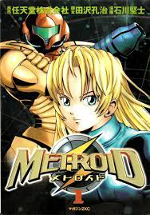
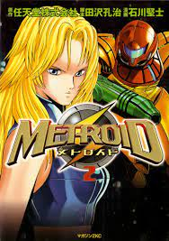
The Metroid Manga tells of Samus
Aran's origin, from her parents death, adoption and training by the Chozo, her brief time in the Galactic Federation, and the events leading up to the first Metroid game.
 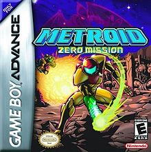
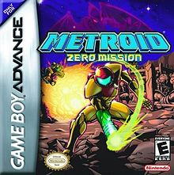
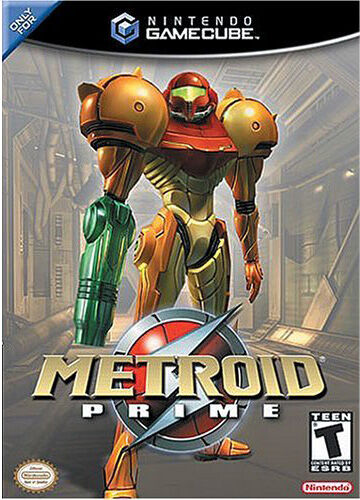
Samus intercepts a distress signal from the Frigate Orpheon, a Space Pirate vessel orbiting the planet Tallon
IV, which had been overrun by Parasites and their Queen. Samus destroys the Queen and the Orpheon and follows a resurrected, cybernetically enhanced Ridley to Tallon IV. She then finds that the Chozo had settled on the planet,
but disappeared due to a mysterious object crashing into the planet and releasing a radioactive substance dubbed Phazon. The Space Pirates
have set up mines to harvest the Phazon to create enhanced weaponry and armor. Samus sabotages the mines, destroys Meta-Ridley, and defeats the Metroid Prime;
the main source of Phazon inside of the Impact Crater. The Metroid Prime absorbs the Phazon Suit Samus acquired, and becomes Dark Samus.
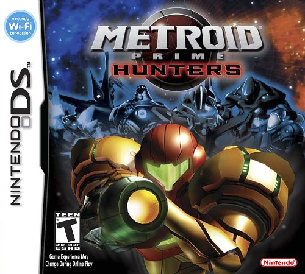
The Galactic Federation gets a weird telepathic message from the Alimbic Cluster. Samus is sent there to find the "Ultimate Power" that was mentioned in the message. 6 rival Bounty Hunters, Trace, Weavel, Noxus, Spire, Kanden, and Sylux also hear the
message and try to find the Power before the others. The Ultimate Power is revealed to be a lie by Gorea, a creature sealed by the Alimbics in an interdimensional prison. After its defeat, Samus and the other hunters escape.
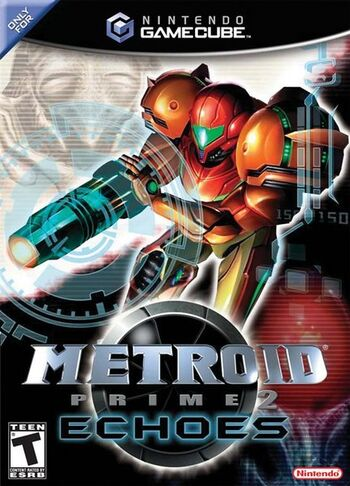
Samus goes to planet Aether after the G.F.S. Tyr lost communications with the Galactic Federation. The crew is found dead, by the hands of the evil race called the Ing. Samus meets U-Mos, one of the last surviving members of the Luminoth race, native
to Aether. She learns that the planet had been split into two dimensions by a meteor similar to Tallon IV's crash site. Samus restores the Light of Aether to the planet, destroying the Ing and Dark Aether. Dark Samus is also present
throughout the campaign, harvesting Phazon to increase its power.
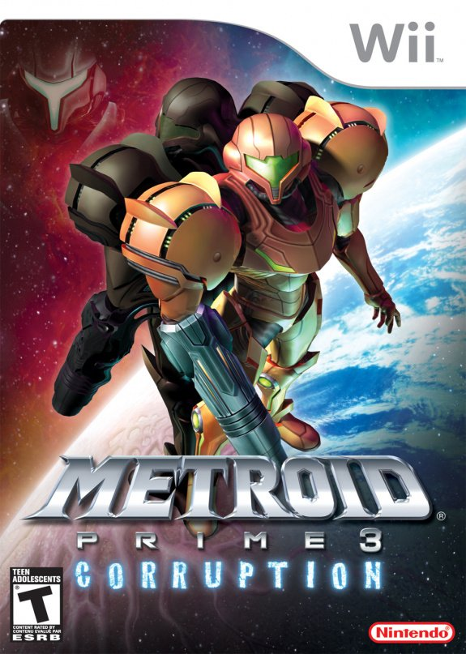
The Galactic Federation calls on Samus and three other Bounty Hunters to investigate Pirate operations and to repair Aurora Units. The Pirates attack Norion, a nearby planet, during the briefing. Samus and the other Bounty Hunters repair the Defense Cannon
to repel a Leviathan Seed launched by Dark Samus and the Pirates, but the Hunters are corrupted by Phazon before they can do anything. Samus wakes up a month later and is given a PED Suit and the mission to destroy the remaining Leviathan
Seeds and find the other Bounty Hunters that were lost on planets Bryyo, Elysia, and Urtraghus. She has to kill the Hunters, as their corruption became too strong. Samus finally makes it to Phaaze, the source of all Phazon. She destroys
the planet, along with Dark Samus and the rest of the Phazon in the universe.
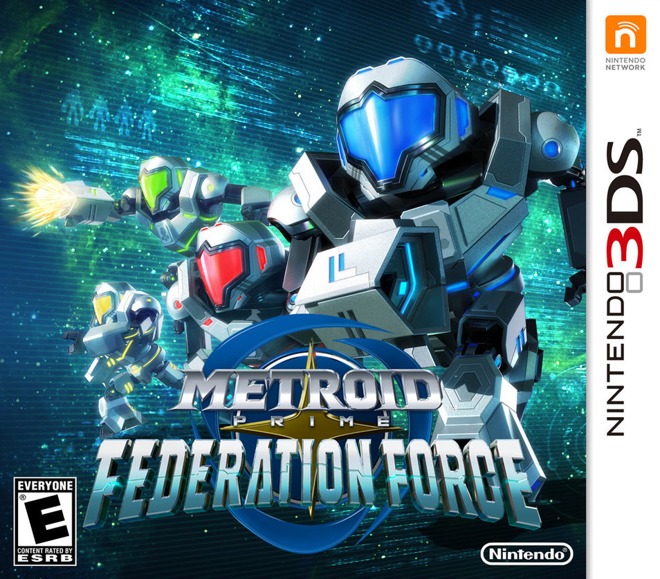
After Phazon was obliterated from the universe, the Space Pirates were weakened, but still a threat. The Galactic Federation activated Operation Golem; creating Mechs to achieve technical superiority over the Pirates. The Federation Force, a group of
elite marines, pilot these Mechs. They find a major Pirate presence in the Bermuda System, and attempt to destroy them with help from Samus Aran. The Doomseye, an enormous Pirate vessel enters the system, but is destroyed by the Federation
Force.
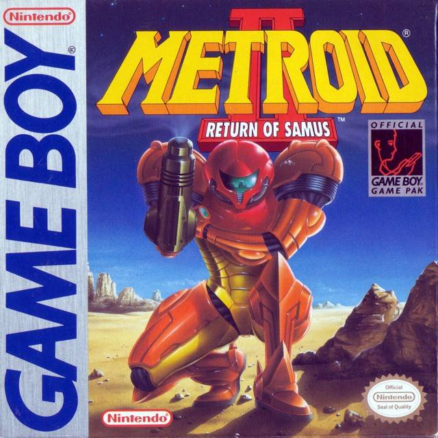
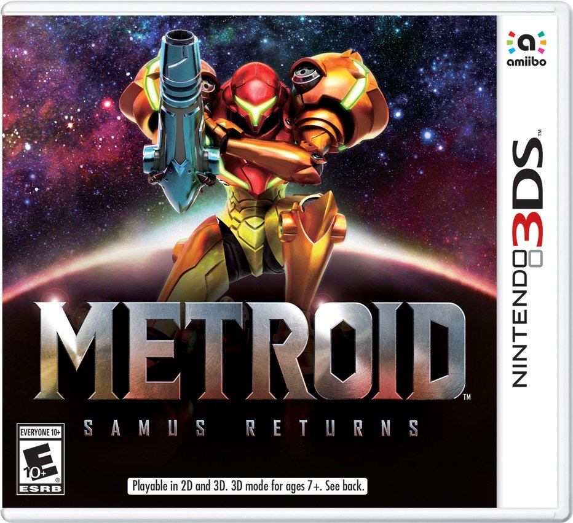
Sometime after the mission in the Bermuda System, the Galactic Federation announces that Metroids are too dangerous to be left alive. After failing multiple times to eradicate them, the Federation sends Samus to destroy the remaining Metroids on their
homeworld: SR388. After killing the final Metroid, she finds an unhatched Metroid egg, and a baby hatches from it. Samus prepares to destroy it, but the Baby Metroid had already imprinted Samus as its mother. Proteus Ridley, the final
cybernetic form of Ridley, attempts to steal the baby Metroid but fails. Samus then gives the Baby to the Space Science Academy for further research into the Metroid species.
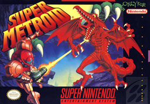
Shortly after giving the Baby Metroid to the Academy, Samus receives a distress signal from them. Ridley followed her from SR388, and steals the Metroid. The research station is destroyed, and Samus follows Ridley to a rebuilt Pirate base on Zebes to
prevent them from cloning more Metroids for use as bioweapons. She kills the Pirate leaders Kraid, Ridley, and the new and improved Mother Brain, destroying Zebes, (saving the animals) and killing the last remaining Metroids.
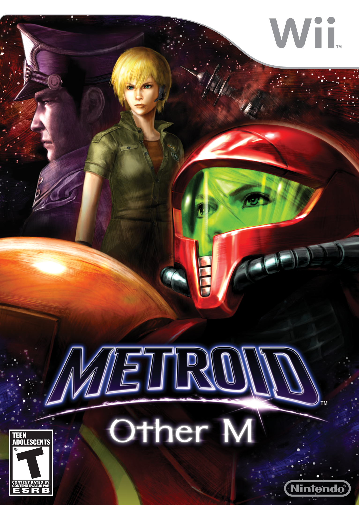
After the destruction of the Metroids and Mother Brain, Samus went into rehabilitation and had the Baby Metroid's DNA extracted from her Power Suit. She then recieves a distress signal from a derelict Federation vessel, the BOTTLE SHIP. Samus meets the
07th Platoon and Adam Malkovich, her former CO. They explore the ship together and find that some rogue Federation scientists cloned Ridley and recreated Metroids, without their ice weakness. Adam sacrifices himself to destroy the
Metroid sector of the ship, while Samus finds the Queen Metroid and exterminates the Metroid species once again.
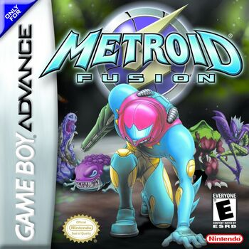
Samus returns to planet SR388 as a bodyguard for Biologic's research team, but is infected by the X-Parasite. Her Power Suit is surgically removed by Federation doctors and she is given a vaccine that contains Metroid DNA. This gives her Power Suit the
ability to absorb X-Parasites, but also gives her a weakness to ice. Samus is sent to search the Biologic Space Laboratories research station for a disturbance that appeared. The researchers attempted to contain Samus's original infected
Power Suit, but it turned out to be an X mimicking Samus- The SA-X. The SA-X released other X-Parasites to infect the entire station; while Samus works to stop the infection, she discovers a secret lab with Metroids which the SA-X
destroys. She also discovers that there are at least 10 SA-X through the X's asexual reproduction. With the help of the ship's computer, a digital version of Adam Malkovich, she crashes the station into SR388, destroying all X on the
station and the planet.
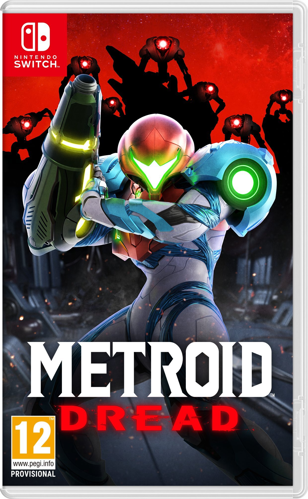